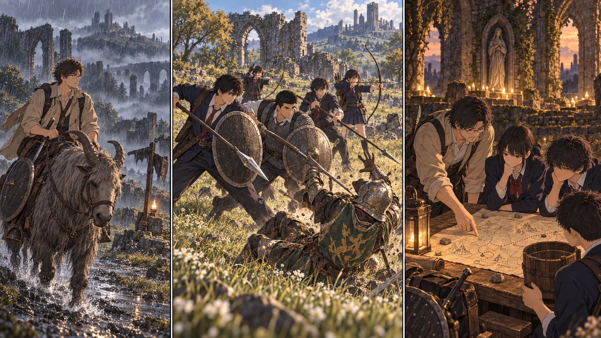

最新の本編へ · 前の場面へTURN1−45 · 地図に、帰り道を描く。

【DAY31・朝／指笛を借りる】
颯は先生の説明を聞いてから、指笛を差し出した。
「返すの、明日じゃなくて今日にしてください」
先生は受け取った手を、一度止める。休ませているつもりで、この子にまた誰かの帰りを待たせるのだ。
「夕方には戻る。遅れる時の手順も、結衣に残す」
颯は頷いた。『絶対』とは言わなかったことを、聞き逃さなかったようだった。
トレントの最初の一歩で、先生の身体が鞍の上で揺れた。颯が教会の入口から、膝に力を入れすぎないよう声をかける。止まる。曲がる。降りる。剣は抜かない。小盾は手の届く位置。既存の祝福へ戻る確認も済ませ、先生は一人で街道へ出た。草地にいる黄金の軍馬は、まだ別の話だ。今日借りたのは、颯の一頭だった。
【DAY31–32／先頭を走る人、後ろで育つ人】
関門前の石碑から地図を回収する。そこに道が描かれていても、道の上の兵まで消えるわけではない。門の上を見た先生は、馬を止めた。大きな影が一つ。見える範囲だけでも、兵が数人。
攻略画面で何度も駆け抜けた場所だった。今は手綱を握り直し、先に戻る方向を見る。兵の視線が切れる間を待ち、狭い場所を越えたら速度を落とさず距離を取る。霧が残した死角は、地図にも白いまま残した。
教会の近くでは、別の音がしていた。直人の盾が一人の兵を止め、陽太の槍が横から伸びる。花は味方の背中が射線を横切った瞬間、弦を戻した。悠が杖を構えたまま位置をずらし、次の合図で花の矢が飛ぶ。
大地の組も、相手を取り囲む位置と帰る隙間を分けていた。二日間、休息を挟んで延べ十八体。武器を握る手には、もう最初の日のぎこちなさだけは残っていない。
嵐丘の小屋には、戦う格好をしていない女性がいた。ローデリカ、と名乗った彼女の話を、先生は立ったまま聞くのをやめた。城へ行った人たちのこと。戻らなかった人たちのこと。
生徒には黙っておこう、とは思わなかった。何を知らずに出発するのか。それを減らすために、自分がここへ来た。小屋の祝福の場所を記し、光には触れずに帰る。
【DAY33／雨の日の一歩】
雨が盾の縁を伝った。直人の後ろ足が滑り、受けた衝撃が肩へ抜ける。槍を引こうとして、顔が歪んだ。
「痛い。ここで交代する」
陽太がすぐ前を埋める。陸が帰路を見て、花は追ってくる兵の足元へ狙いを置いた。赤い瓶を使い、A隊は教会へ。連絡を受けた蓮はB隊の周囲を確認し、その組の短い予定だけを終えて戻した。
全員を連鎖して引き上げさせることも、一人を残して戦わせることもしない。直人はその日の祝福で身体を回復した。二日間の戦果は六体に減ったが、欠けた名前はない。
【DAY34／まだ、城の中ではない】
雨の止み間、先生は城へ向かう坑道を抜けた。先に霧がある。その向こうを、確かめるためだけに一歩踏み越える気にはなれなかった。
手前に、協力者を呼ぶ印が見える。ロジェール。その名を控えた。『攻略サイト先読み』にある協力の手掛かりと重なるが、今ここで呼ぶ理由はない。まだ生徒の二隊は、育っている途中だ。
先生が望んだ城内の脇道は、この先にある。だがそこへ辿り着くには、まずマルギット。城の外を回れたとしても、それで中を調べたことにはならない。
【DAY35–36／暮らしにも、地図にも余白がある】
東へ向かった日は風が強く、翌日は雨になった。先生は第三マリカ教会まで接近し、祝福の光と水辺への方向を記した。屋根の抜けた場所、濡れた地面、草に隠れる岸。水が近いことと、三十三人が住めることは違う。夜の見張りや増水までは確かめられていない。
『移転候補。決定ではない』。地図の端にそう書いた。雨の中をもう一本先へ進む代わりに、追う影がないことを確認して教会へ転送する。戻った先生を、結衣はまず人数表ではなく顔から確かめた。
その頃、誠と楓の足元には小さな水溜まりができていた。
「……まだ漏れる」
「底じゃなくて、継ぎ目」と楓が指を置く。
板を合わせ、締め直し、翌日も水を入れる。得意なゲームの知識は、材料を無限に増やしてはくれない。それでも、どこを直すかを考える助けにはなった。凛たちはいつもの食材を煮炊きし、取水組は煮沸を待つ器と飲む器を分けた。生活を一から作り直すのではなく、同じ仕事で何度も困っていた箇所を、一つずつ減らした。
【教会に残る二十人】
航と亮は、食材を探す日にも矢の束を数えていた。近場に再び現れた通常兵を、遠征隊とは別の時間帯に狙う。視線の通る場所を選び、六人で一体ずつ。雫と湊は予備を受け持ち、凛と莉央も帰路を確かめる。
教会には結衣、隼人、結菜、翼が残る。取水の六人が戻ってから狩りの組が出る。誠と楓の工作の隣では、澪が帰還と収支を書き、颯は休む。
八日で通常兵は延べ二十体。余分に使った矢も二十本。それでも、千二百ルーンを残せた。
「留守番代じゃないからね」と莉央が袋を置く。「こっちも、ちゃんと働いた分」
結衣は笑って受け取った。遠征だけが、皆を前へ進めているわけではない。
【DAY37–38／十二人、レベル二十】
晴れ間のうちに、先生は東側の地図も持ち帰った。紙の線と、自分が踏んだ道を重ねる。黒く塗った危険地帯が増えるだけの地図ではない。戻れる曲がり角、見張りを避けて待てた窪み、まだ誰も触れていない祝福。使える場所も、確かに増えていた。
育成隊は後半四日で延べ三十体。共同のルーンを配り、三十六日の夕方、最後に膝をついた葵が、立ち上がって自分の指を握り開きした。A隊もB隊も、六人全員がレベル二十。先生は三十のまま。今度の前衛は、自分一人ではない。
誠の桶は、三十八日目にようやく水を留めた。小さな二リットルの木桶。原水用と大きく印をつけ、飲用の器とは離して置く。
颯には指笛を返した。『今日』を八回守れたことを、自分だけの成果とは思わない。先生が帰ってくる場所を、二十人が毎日残していた。
【DAY38・18:10／次は、門を越える】
夕方の教会で、先生は地図の霧の印に指を置いた。
「マルギット。まずここだ。私が前へ出る。全員で同じ場所に固まる必要はない」
蓮は紙の両側へ小石を離した。「射線と、下がる場所。あと、先生を見る役も要る」
大地は自分の盾を見てから、共同保管の大剣へ目を向ける。重い一撃を四人で合わせる案はある。誰が何を持てるかは、ここで確かめる。武器が揃っていないのに、もう組めたことにはしない。
結衣が、日付に小さな丸をつけた。次の赤月は四十日目。残る六十二日を、待っているだけでは使い切ってしまう。
城内への脇道は、まだ霧の向こうだ。今度はその手前に、育った十二人と、地図を持ち帰った先生がいる。
【作戦手帳への追記】
円卓を先に訪ねられれば、装備を整える手が増える。城を攻略した後は、二隊で割符を探す。狂い火の塔については、探索する生徒たちが巻き込まれる前に、先行役が光を止める。
先生はまだ歩いていない線に、決定済みの印をつけなかった。まず行き方を確かめる。無事に戻った八日間の地図は、次の一歩を選ぶためにある。